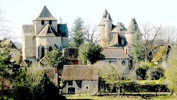
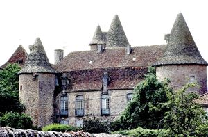
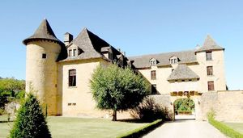
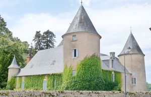
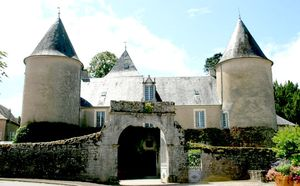
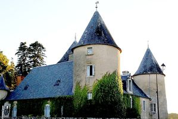

Recensement Jean-Claude Truffet
| Département | 46 — Lot |
| Canton | Gramat |
| Commune | Thégra_Padirac |
| Type d'édifice | Château |
| Période d'origine | XVI |






THEGRA, en 1574, pris par Antoine de Malleville, lieutenant du capitaine protestant Bessonie. Antoine de Gozon est tué dans cette attaque et Jeanne de Valon est obligé d'épouser en secondes noces Antoine de Malleville, ils eurent deux enfants, dont un fils appelé Guyon. Antoine de Malleville a été tué en 1577. Il est remplacé par son lieutenant, Pierre de Lagrange, sieur de La Pannonie, pour garder le château, et s'est marié avec Jeanne de Valon dont il a un fils, avant dêtre tué en 1580. Jeanne de Valon est veuve pour la troisième fois .Elle se remarie alors en quatrièmes noces avec Henri des Ondes, seigneur catholique. Jeanne de Valon transmet la seigneurie de Thégra à sa petite-fille Jeanne de Gozon, dame de Thégra, mariée à Jean Gabriel de Gauléjac, d'où Jeanne Marquèse de Gauléjac, mariée en 1646, à Jacques-Victor de Touchebuf-Beaumond, comte de Clermont, baron de Gourdon, de Gramat, capitaine d'une compagnie de chevaux-légers en 1646, décédée en 1674. De ce mariage est né Anne de Touchebuf-Beaumond, née en 1648, mariée en 1670 avec Armand de Durfort, comte de Boissières et de Puycalvet, baron de Salviac, après 1737. La seigneurie de Thégra est vendue en 1699 à deux frères, Louis et Jean de Lagarde. Ils l'ont revendu en 1731 à François Niocel, marchand de Saint-Céré. C'est ce dernier qui a fait la reconstruction et le réaménagement au XVIIIe siècle. Le château est vendu à la Révolution comme bien national à M. Lavaur. Il est habité en 1836 par Louis Lavaur. En 1848, il appartient à l'avocat Jean-Jacques Bergues marié à Catherine Fleur Félicie de Certain de la Meschaussée leur fille adoptive Céline de la Méchaussée, s'est mariée en 1863 avec Gustave Calmels d'Artinsac, descendant des seigneurs de Montvalent. Le château est ensuite la propriété de leur fils, Alain Calmels d'Artinsac dans les années 1930. L'édifice est inscrit au titre des monuments historiques le 29 juin 1960. Aujourd'hui propriété de monsieur Dartenset. A deux kilomètres au nord le château de PADIRAC sans information historique.
Le château actuel a été bâti sur l'emplacement de l'ancien château après que le Quercy se fut libéré de l'occupation anglaise vers 1443. Thégra est devenu une forteresse protestante de 1574 à 1580.Les ouvertures actuelles, notamment les portes vitrées avec leurs balcons de fer forgé paraissent être de la deuxième moitié du XVIIe siècle, de même que la terrasse qui précède la façade nord, et son perron. La toiture à la Mansard est probablement de cette époque, de même que la suppression de l'étage de mâchicoulis dont il reste des traces sur la tour nord est. Le château de Thégra comprend un corps de logis rectangulaire, flanqué à ses angles nord-est et nord-ouest de deux tours rondes, une troisième contenant l'escalier à vis, est accolée à la façade sud, malgré l'absence de mâchicoulis le volume est séduisant. les fenêtres ont été remaniées dans la seconde moitié du XVIIe siècle. La maison forte de Padirac de plan rectangulaire à deux niveaux toit en croupe avec une lucarne centrale deux tours rondes aux angles de la façade toit en poivrière et tourelle sur l'arrière.
Antoine de Malleville
"
Château de Thégra gravure 1 à 3 et de Padirac 4 à 6